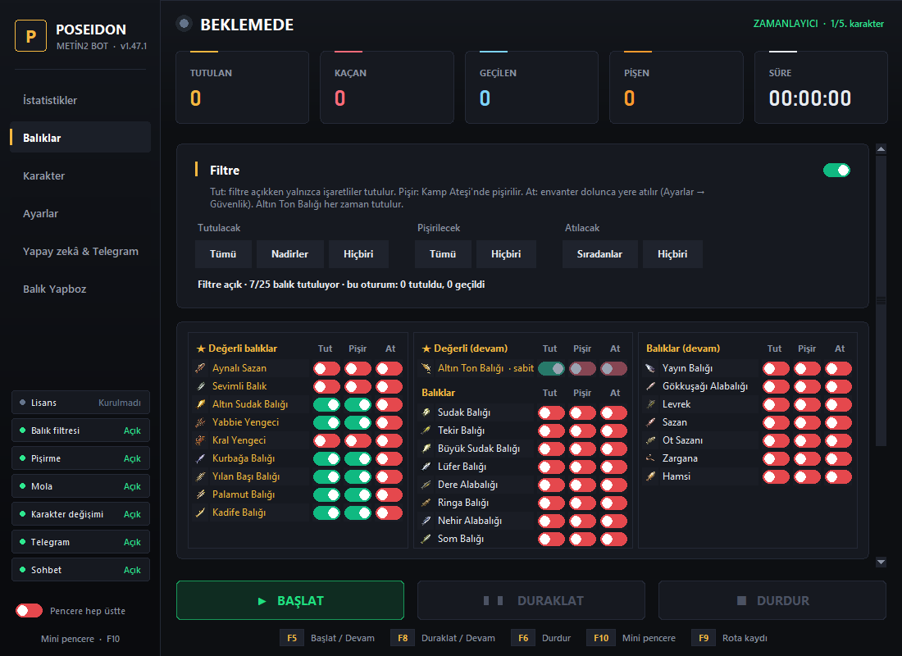
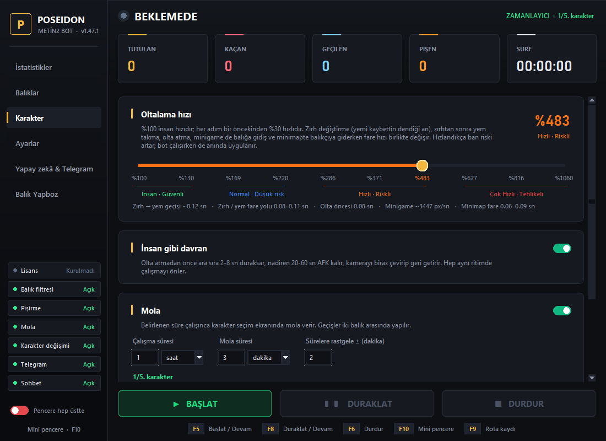
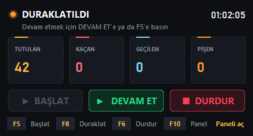

Sen kaç balık tutabilirsin?
Balık halkanın içindeyken üstüne tıkla; 3 isabet bir balık eder. Şimdi aynısını saatlerce, hiç kaçırmadan yaptığını düşün. Poseidon tam olarak bunu yapar.
Balığa tıkla: halkanın içindeyken sayılır.
Özellikler
Oyunun belleğine dokunmaz; ekrana bakıp fare ve klavye ile, bir oyuncu gibi çalışır.
Tam otomatik döngü
Yem takma, olta atma, minigame ve sonucun okunması kendiliğinden; zırh değiştirerek animasyonu kısaltır.
Tek tuşla yem alma
Balıkçı dükkânını açıp "Şimdi al"a basın; istediğiniz sayıda solucanı alıp envantere dizer, işaretli eşyaları önce satar. Yem azalınca ve bitince Telegram'dan haber verir.
Balık filtresi
Hangi balıkların tutulacağını siz seçersiniz; istemedikleriniz oltadan bırakılır. Altın Ton Balığı her zaman tutulur.
Pişirme ve yere atma
Seçtiğiniz balıkları Kamp Ateşi'nde pişirir; envanter dolunca işaretli balıkları yere atar.
Mola ve karakter değişimi
Belirli sürelerle mola verir, sıradaki karaktere geçer. Sürelere rastgele sapma eklenebilir.
İnsan gibi davranış
Ayarlanabilir hız, ara sıra duraksama, kısa AFK anları ve kamera hareketleri ile hep aynı ritimde çalışmaz.
Güvenlik önlemleri
Sohbette GM ya da "bot musun" sorusu görülünce, can azalınca veya bağlantı kopunca durur ve haber verir.
Telegram ile uzaktan kontrol
Başlat, durdur, ekran görüntüsü, istatistik ve günlük rapor telefonunuza gelir.
Oyun içi sohbet
Size yazanlara yapay zekâ ile kısa, doğal cevaplar verir; mesajları Telegram'a iletir.
Mini pencere ve kısayollar
F5 başlat, F8 duraklat, F6 durdur; F10 ile oyunun yanında duran küçük pencere.
Otomatik güncelleme
Yeni sürüm çıkınca bot kendini günceller; ayarlarınız ve key'iniz korunur.
Canlı istatistik
Tutulan, kaçan, pişen balıklar ve türlere göre günlük sayaç.
Ekran görüntüleri
Tek, sade bir panel: her ayar kendi sekmesinde.



Poseidon'u iş başında izleyin
Kurulumdan balık tutmaya kadar botun nasıl çalıştığını videoda görün.
Fiyatlar
Süre, key ilk girildiği an başlar.
Satın al
Tüm paketlerde 1 key en fazla 6 bilgisayarda çalışır. 6'dan fazla bilgisayar için ikinci bir lisans alınması gerekir.
Fırsatlar
Önce dene, sonra arkadaşlarını getir, kazan.
Ücretsiz deneme
Videomuzdan geldiyseniz Telegram'dan yazın; botu 1 gün boyunca ücretsiz deneyin, beğenirseniz paket alın.
Deneme key'i isteArkadaşını getir
Getirdiğiniz her kişi aylık (veya daha uzun) paket aldığında, size 1 hafta ücretsiz key süresi eklenir. Ne kadar çok kişi, o kadar çok hafta.
Telegram'dan bilgi alNasıl satın alınır?
Dört adımda başlarsınız.
Telegram'dan yazın
İstediğiniz paketi söyleyin; ödeme bilgilerini size özelden iletiriz.
Havale / EFT yapın
Açıklamaya yalnızca Telegram kullanıcı adınızı yazın, dekontu gönderin.
Key'iniz gelsin
Ödeme görülünce key'iniz Telegram'dan gönderilir.
İndirip başlayın
Poseidon kurulum paketini (~60 MB) indirin, bir klasöre çıkarın, Poseidon klasöründeki Poseidon.exe'yi açın. İlk açılışta en son sürüm kendiliğinden kurulur; sonra key'i girin. Klasörde yalnızca Poseidon.exe görünür; botu her zaman onunla açın.
Sık sorulan sorular
Kurulum ya da ayar sorum var, nereye sorayım?
Telegram'daki @PoseidonDestekBot destek botumuza yazın; kurulum ve ayar sorularını (ör. "3 karakteri sırayla nasıl tuttururum?") hemen cevaplar. Cevabını bilmediği sorular ve lisans, key, ödeme konuları destek ekibine iletilir.
Neler gerekiyor?
Windows 10 ya da 11 ve Metin2 istemcisi. Ekstra program kurmanız gerekmez; güncellemeler kendiliğinden indirilip kurulur. Oyun penceresinin 800×600 boyutta ve ekranda görünür olması önerilir.
Key'i başka bilgisayarda kullanabilir miyim?
Evet. Bir key en fazla 6 bilgisayarda çalışır. 6'dan fazla bilgisayarda kullanmak için ikinci bir lisans almanız gerekir. Bilgisayar değiştirirseniz Telegram'dan yazın.
Güncellemeler ücretli mi?
Hayır. Key süreniz boyunca çıkan tüm güncellemeler ücretsizdir ve bot kendini otomatik günceller.
Bot açıkken bilgisayarı kullanabilir miyim?
Bot fare ve klavyeyi kullandığı için çalışırken bilgisayarı kullanmamanız önerilir. Duraklat (F8) ile istediğiniz an araya girebilirsiniz.
Ban riski var mı?
Evet. Botlar oyunun kullanım şartlarına aykırıdır ve hesabınızın kapatılmasına yol açabilir. Bot riskleri azaltan önlemler içerir, ancak ban olmayacağı garanti edilemez. Kullanım riski tamamen kullanıcıya aittir; ban nedeniyle iade yapılmaz.
İade var mı?
Key bilgisayara bağlandıktan sonra iade yapılmaz. Satın almadan önce sorularınızı Telegram'dan sorabilirsiniz.